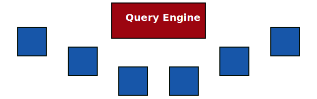

Traditional query processing over centralized data

-
Dataset is collocated with query engine
All data is known beforehand
-
Single dataset
Combining multiple datasets is hard
-
Fast querying
Planning-relevant statistics can be precomputed
How to query over decentralized data?


-
Data and query engine are not collocated
Query engine runs on a separate machine
-
Not just one datasets
Data is spread over the Web into multiple heterogeneous sources
Exploit interlinking of documents

-
Linked Data is interlinked
Following the Linked Data principles
-
Query engine can follow links
Start from one source, and discover new sources on the fly
Link Traversal Query Processing (LTQP)
Challenges for LTQP
-
Query sources must describe their query API
Agents must be able to discover capabilities of sources for query planning
-
Query sources must describe their contents
Agents must be able to discover contents of sources for query planning
Cardinality-based, shape-based, approximate, privacy-preserving...
-
Query agents must have efficient query planning algorithms
(Adaptive) query planning and execution over heterogeneous query APIs